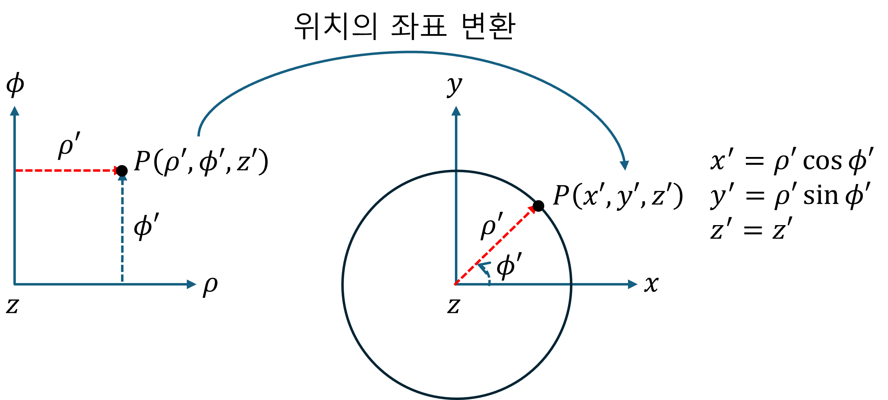
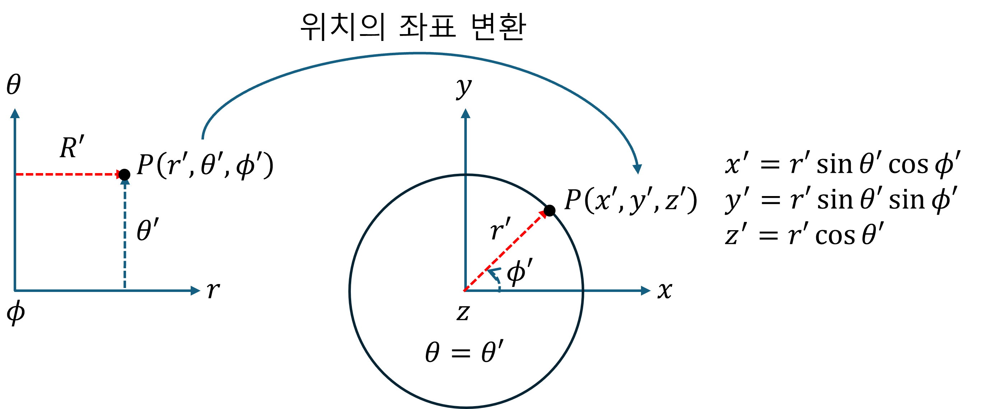

(b) Mapping I - Position
중요사항: [매개변수 공간] → [실 공간] 에 대한 것으로 점(위치) 변환(mapping) 을 다룬다.
1. [원통 좌표계 매개변수 공간] → [실 공간]
아래 그림에서 왼쪽은 원통 매개변수 공간이다. 매개변수 공간이란 실제 공간이 아니다. 따라서, 저 매개변수 공간의 좌표를 실제 공간의 좌표로 변환(mapping)해야 한다.
2. [구 좌표계 매개변수 공간] → [실 공간]
아래 그림에서 왼쪽은 구 매개변수 공간이다. 매개변수 공간이란 실제 공간이 아니다. 따라서, 저 매개변수 공간의 좌표를 실제 공간의 좌표로 변환(mapping)해야 한다.
